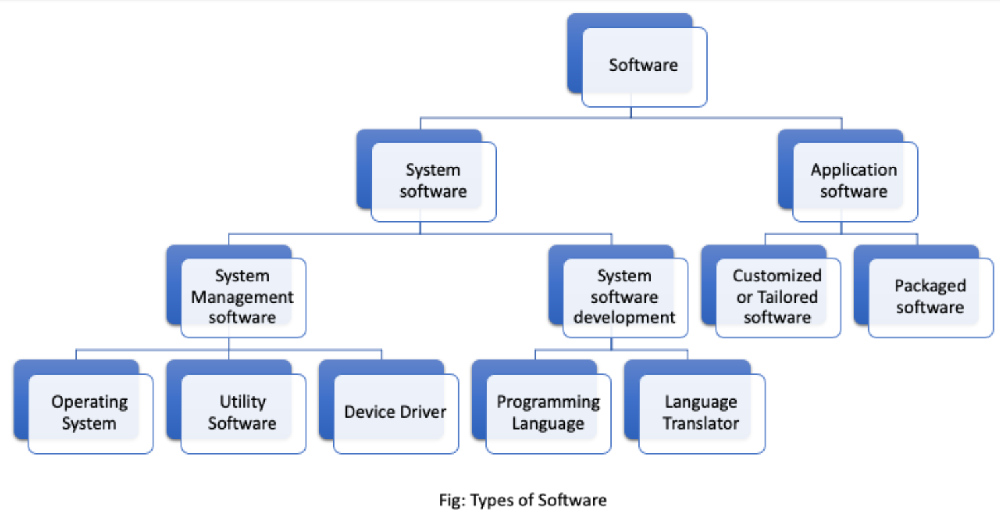
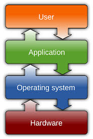

Chapter-3: Computer Software and Operating System
Introduction
Computer software refers to a collection of data, instructions, and programs that enable a computer to perform specific tasks. It is categorized into system software and application software.Software helps to mobilize the hardware and other resources. In order to mobilize hardware we have to write several set of instruction which instruct computer what to do, what not o. These set of instruction are collectively know as program and the term software is the collection of related programs and associated documents. In Order to produce useful output, hardware and software must work together.
Types of Software
- System Software: System software is set of one or more programs designed to control the operation of our computer system. This type of software doesn't fulfill the specific requirement of the user. They are general program written to assist human in the use of the computer system. In general system software support the running of other software, communicate with peripheral device, support the development of other types of software and monitors the use of various hardware resources. Thus, the system software makes the operation of the computer system more effective and efficient. The system software is categorized into two categories.
1.1) System Management: It is responsible for proper management and functioning of the computers system. All types of management between computer hardware and software is performed by system management software. There are 3 types of system management software:
1.1.1) Operating System: Operating system is a collection program that controls the overall operation of the computer system. It is the 1st program that is loaded into memory when the computer is turned on. It provides platform for other application program to run and execute. It provides user with an interface so that uses can easily communicate with computer. For example Linux, Windows, Mac etc
1.1.2) Utility software: It is the supporting software which is used to perform specific task related to the maintenance of the computer system. Some of the utility software are included in operating system where as some are available as separate utility in market. They are also called service program. For example Norton Utility, PC tools, win zip etc
1.1.3) Device driver: A device driver is a software which is responsible for smooth functioning of the hardware device that is connected to the computer. When we add a new device to the computer, we need to install new software called device driver. Device driver will co-ordinate with the operating system and the newly installed hardware functions properly and smoothly.
1.2) System Development: It refers to set of programs that are use to develop computer program. This type of software are not used by a normal user of the computes. They are used by programmers for the development of new program. There are two types of system development software:
1.2.1) Programming language: The language with which we give instruction to the computer is known as programming language. Programming language are the set of different keywords, variable, operators, loops and other symbols etc. They help to make communication between computer and user. These are two types of programming language low level language and high level language.
1.2.2) Language translator: It is a special kind computer software which translates the programs written one language in another language. It is compulsory for both low and high level language. It is also called language processor. The types of language translator are compiler, interpreter and assembler.
2) Application Software: Application software is a set of one or more program which are design to do a specific task. It is made to fulfill the user demand. This program directs a computer to solve user oriented problem such as preparing bills, calculating mathematical equation, preparing mark sheet etc. The software that are develop for user purpose is called application software.These types of software are generally develop by using high level language. for example Ms-Excel, Photoshop, Billing software etc. There are two types of application software.
2.1) Packaged software: They are the generalized set of programs design and develop for general purpose. It is generally large sized, error-free, advance and standard software with much more functionality fir especial work. This type of software doesn't perfectly match the requirement of many organization or user. They cannot be changed easily are developed and designed by reputed software Company so they are trust worthy. They are expensive for small organization. for example Ms-Office, Adobe, Macromedia etc.
2.2) Customized /Tailored software: This is a software develop in high level language for special task. This types of software is developed for some specific purpose for solving specific problem of specific user or organization. The requirement on the user or organization can be perfectly matched. They can be changed easily since they are made by local programmer. for example: payroll system, inventory management, school management, billing software, mark sheet evaluation etc.
Operating System
An operating system (OS) is an integrated set of program that controls overall resources such as CPU, memory, input-output device of the computer system. The major objective of operating system is to improve the performance and efficiency of a computer system. Like the manager of a company, an operating system is responsible for the smooth and efficient functioning of the entire computer system. The operating system provides the platform for other application program/software to run and execute. It provides user with an interface so that user can easily communicate with computers, which is more convenient to use and operate. An operating system is a collection of program that controls the overall operation of the computer system. It also controls and co-ordinate the use of hardware, among the various application program for various user. So, it act as an interface between user and the computer hardware
Functions of an Operating System
- Input-Output (I/O) Management: Input-Output is essential to operate any computer. It allows computer to interact with several peripheral devices such as keyboard, mouse, printer, scanner etc.
- User Interface (UI): User Interface means an ideal environment in which user can work on it so that s/he can interact with the computerized system. Every operating system provides the feature of user interface in order to enhance the experience and joy of using computer or any other computerized system. It act as a bridge between user and computer. There are 2 types of user Interface.
- Character/Command User Interface ( CUI ): Eg MS-DOS
- Graphical User Interface (GUI ): Eg Windows, MAC OS
- Security: The operating system of a computer has a number of built-in tools to protect against security threats such as viruses, unauthorized access, suspicious network activity etc. The basic security in a OS is to control access to your computer by setting users and password.
- Process Management: The process management allocates a processor to execute a chosen process. OS acts as a traffic controller, job scheduler, process scheduler and dispatcher.
- Memory Management: Memory is a large array of bytes, each with its own address. When the user request CPU for read-write operation. OS determines the amount of memory required for the program instruction and data. Then OS allocates required memory to load the program and data into RAM. When the program terminates it freeze up the space and new program is loaded.
- Data Management: Data management allows organizing their data into logical grouping called files.Earlier Operating system does not provide features of data management. Hence, they were inflexible but nowadays, every operating system provide this feature.
- Virtual Memory: Virtual memory is the feature of an operating system that allows a computer to compensate for shortage of physical memory by transferring temporary files from RAM to disk. Virtual memory has twice as many address as main memory. The process of translating virtual address into real address is known as mapping. The copying of virtual pages from disk to main memory is swapping.
- Time sharing: The function of OS that involves CPU to allocate time in a number of user on same computer. This property generally found in network operating system such as windows NT.
Types of Operating Systems

- On the basis of processing
- Multi-programming OS: Multi-programming is used in multi-user environment. It is the technique in which multiple user program are executed simultaneously by single processor. Multi-programming means when two or more than two program are provided to the CPU for processing or loaded in the internal storage of CPU at the same instant of time. From the loaded program once the portion of one program is executed and the portion of another program is executed and so on. Thus, multi-programming refers to concurrent execution of several program. The main purpose of multi-programming is to increase the utilization of computer and its resources. Different forms of multi-programming OS are multi-tasking, multi-processing and multi-user.
- Multi-tasking OS: Multi-tasking OS allows more than one program to run concurrently mainly in a single user system. These computer are capable of executing several tasks or program at the same time. For executing several task it can be single or multi-processing system. In some multi-tasking system one of the process is called fore-ground (active) other are called background (inactive). Multi-tasking OS increase the productivity of the user by executing many task simultaneously. Some of the most common example are MS-Windows, Linux, MAC OS etc.
- Multiprocessing OS: Multi-processing system has more than one processor linked in a coordinated way. Multiprocessing OS supports running a program in more than one CPU. Generally, super server are especially designed to support multiple processor. UNIX is commonly used multi-processing OS. Multi-programming and multiprocessing are no the same concept. Multi-programming involves concurrent execution of two or more programs by a single CPU, whereas multi-processing involves two or more processor (CPU) for controlling the different activities or execution of many program simultaneously. Multi-processing concept is also known as parallel processing. It is more costly and complex technique the multi-programming which dramatically increase the program execution speed of computer.
- Time-Sharing OS:Time sharing is a technique which enable many people located in various terminal to use a particular computer system at a same time. Processors time which is shared among multiple user simultaneously is termed as time sharing. Multiple jobs are executed by the CPU by switching between then, but the switches occurs so frequently that user can receive a immediate response.
- Batch processing OS: Batch processing is a technique which requires grouping of similar jobs, which consists of program, data and system command. It is also known offline processing. This type of processing is suitable in program with large completion or involvement. For example, Payroll, Weather forecasting, Statistical analysis and many more. User need not wait while the job is being processed. They can submit their program to the operator and collect them later which means, the jobs are entered stored on a disk in a batch or queue and is executed one after another under the control of the OS. Major disadvantage of batch processing is that it does not allow interaction between user and program during execution.
- Multi-threading OS: A program in execution is known as process and can be divide into multiple smaller sub process. This sub-process are known as thread. Multi-threading OS has the ability to divide process into threads and execute them concurrently. Threads are individual process that execute simultaneously in multi-tasking OS.
- Real time OS: Real time processing method is one that controls environment by receiving data and taking action quickly to affect the functioning of the environment at the same instant of time. It is an online processing system in which processing time is critical. The entire processing task has to be completed in the predefined time. The real time OS is suitable for following type of operation.
- On the basis of User Interface ( UI )
- Character User Interface (CUI): It is a type of operating system in which whole computer operates or depend upon the command issued by user. All the operations that take place in CUI have their own specific command. Hence, they are known as Character User Interface. User have to remember all the command need to operate the computers. So, they are non user friendly. Only the people people having technical knowledge would operate this type of operating system. It is primitive type of OS, in which graphics, pictures, icons, drop-down menu, dialogue box etc are not used which make it more difficult to use. It uses the character or text mode of computer such as DOS and UNIX. A command prompt is a sequence of character used in CUI. Commands are typed in to instruct computer. MS-DOS is a Character User Interface operating system.
The major advantage of this type of OS is they can have quick response as long as user enters correct command whereas, the disadvantages of command driven User Interface is that, they are very difficult to use if the user is beginner and doesn't know correct command. However, it can be used in older system with no processing capabilities and low storage.
Features of CUI
- It is single user and single tasking operating system.
- Less user friendly than GUI.
- Commands are used to instruct the computer.
- User needs to remember the command for operating this system.
- It cannot display graphics, icon, pictures and multimedia.
- It is faster then GUI system.
- Pointing devices such as mouse, joystick, track-pad are not recognize.
- It can be used in low memory and low processing computer.
- Graphical User Interface (GUI): It is a type of operating system in which computer are operated just by clicking or selecting the required icon or dialogue box instead of writing a direct command to the system. Since graphics like icons, pictures, drop-down menus, dialogue boxes etc are used which makes it more user-friendly than CUI. Since, user doesn't have to remember a single command, every user without technical knowledge can also use this type of OS. Due to user friendly interface, they are simple to use and widely used for domestic application. The goal of graphical operating system is to create a system that the computer user can turn on and operate in right way without any training or by remembering commands. The main advantages of GUI is that they are easy to use especially for beginners. The main disadvantage of GUI is they consume more memory for operation.Windows, MAC OS etc are the example of GUI.
The first Graphical User Interface was designed by Xerox corporations Palo's Alto research center in 1970's, but it was not popular whereas in until the 1980's the emergence of Apple Macintosh that use GUI became popular.
Features of GUI
- It is user-friendly. So, it is easy to use.
- User don't have to remember supports full multimedia and animation.
- It requires larger memory for its processing.
- GUI environments supports full multimedia and animation.
- It can be used in network environment.
- It is multi-tasking, multi-programming, multi-user operating system.
- Every type of peripheral devices can be used.
- Microsoft Windows
- macOS
- Linux (Ubuntu, Fedora, Red Hat)
- Android
- iOS
- Unix
Difference between GUI and CLI

Examples of Operating Systems

Practise Questions
1. What is Spooling?
In computing, spooling (short for "Simultaneous Peripheral Operations On-Line") is a process where data is temporarily stored in a queue or buffer before being processed by a device, like a printer, allowing the computer to continue other tasks.
2. What is a Thread?
A thread is the smallest set or sequence of instructions that a computer can manage and execute; it is the basic unit of processor (CPU) utilization.
3. What is Buffering?
Buffering refers to a technique of temporarily storing data in a reserved area of memory (the "buffer") to smooth out data flow between devices or processes that operate at different speeds, preventing interruptions or delays.
4. What is Virtual Memory?
Virtual memory is a technique used by operating systems to extend the available memory beyond the physical RAM. It uses free space in secondary memory to temporarily store data that would otherwise be held in primary memory.